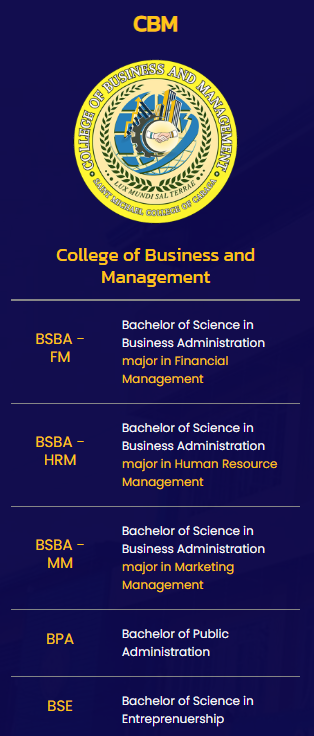
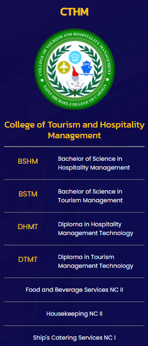
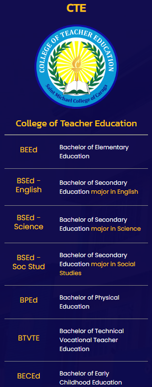
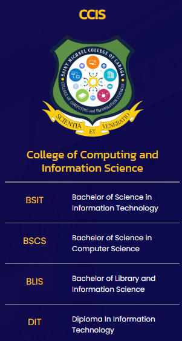

SMCC
SMCC
ABOUT


Course Offered
Basic Education
- Nursery
- KinderGarten
- Elementary
- Junior High School
Senior High School
- ABM (Accountancy, Business, and Management)
- GAS (General Academic Strand)
- HUMSS (Humanities and Social Sciences)
- STEM (Science, Technology, Engineering and Mathematics)
- Maritime
College
 
 
STUDENT SERVICES
ADMISSION REQUIREMENTS
As a general policy on admission, the school shall accept new and returning pupils/students provided they meet the following requirements:
1. Preschool (New)
- Age Requirement:
- Nursery - Four (4) Years Old on or before October 31
- Kindergarten - Five (5) Years Old on or before October 31
- Photocopy of the Authenticated PSA Birth Certificate
- Two (2) pcs. 2x2 colored picture
- Interview with the Principal
- Marriage Contract of the Parents (optional)
2. Grade 1
- Age Requirement:
- Grade 1 - Six (6) Years Old on or before October 31
- Photocopy of the Authenticated PSA Birth Certificate
- Form 138 (Report Card Preschool Education)
- Two (2) pcs. 2x2 colored picture
- Marriage Contract of the Parents (optional)
- Passed the Reading Test
- Certificate of Completion (Photocopy)
3. Returning Pupils / Students
- Final Examination Permit / Clearance
- Form 138
4. High School
- Photocopy of the Authenticated PSA Birth Certificate
- Form 138 (Report Card from Grade 6)
- Certificate of Good Moral Character
- Two (2) pcs. 2x2 colored picture
- Interview with the Principal
- Marriage Contract of the Parents (optional)
5. College First Year Students except BSED and BEED Programs
- Form 138 (Report Card)
- Photocopy of the Authenticated PSA Birth Certificate
- Two (2) pcs. 2x2 colored picture
- 1 long brown size envelope
- 1 long cellophane envelope
- Good Moral Certification from the Principal
- Passed the Reading and Multiplication Table Tests
- Marriage Contract (if married)
- Photocopy of PWD ID from DSWD (if PWD)
- Photocopy of any proof if 4Ps/Listahan 2.0 member or Household Number
- Certificate of Residency (if resident from Nasipit)
- NCAE Result
6. College First Year BSED and BEED Students
- Form 138 (Report Card) with General Average of 85%
- Photocopy of the Authenticated PSA Birth Certificate
- Two (2) pcs. 2x2 colored picture
- 1 long brown size envelope
- 1 long cellophane envelope
- Good Moral Certification from the Principal
- Passed the Reading and Multiplication Table Tests
- Student Aptitude Test for Teachers (SATT) score of not less than 167
- IQ Test (OLSAT) score of not less than 31
- NCAE Result
- Marriage Contract (if married)
- Photocopy of PWD ID from DSWD (if PWD)
- Photocopy of any proof if 4Ps/Listahan 2.0 member or Household Number
- Certificate of Residency (if resident from Nasipit)
7. Basic Education Transferees
- Passed the Entrance Examination (written and oral)
- Form 138
- Photocopy of the Authenticated PSA Birth Certificate
- Certificate of Good Moral Character
- Two (2) pcs. 2x2 colored picture
- Interview with the Principal
- Marriage Contract of the Parents (optional)
- Passed the Reading and Multiplication Table Tests
8. College Transferees (non-educational programs and TESDA Programs except Seafarer)
- Honorable Dismissal
- Transcript of Records
- Photocopy of the Authenticated PSA Birth Certificate
- Passed the Reading and Multiplication Table Test
- Two (2) pcs. 2x2 latest colored picture
- 1 long brown sized envelope
- 1 long cellophane envelope
- Good Moral Certification
- Marriage Contract (if married)
- Photocopy of PWD ID from DSWD (if PWD)
- Photocopy of any proof if 4Ps/Listahan 2.0 member or Household Number
- Certificate of Residency (if resident from Nasipit)
9. College Transferees (BSED and BEED Programs)
- Honorable Dismissal
- Transcript of Records General Average of 85%
- Photocopy of the Authenticated PSA Birth Certificate
- Passed the Reading and Multiplication Table Tests
- Two (2) pcs. 2x2 colored picture
- 1 long brown size envelope
- 1 long cellophane envelope
- Good Moral Certification
- Marriage Contract (if married)
- Photocopy of PWD ID from DSWD (if PWD)
- Photocopy of any proof if 4Ps/Listahan 2.0 member or Household Number
- Certificate of Residency (if resident from Nasipit)
10. Seafarer
- Form 138 (Report Card)
- Photocopy of the Authenticated PSA Birth Certificate
- Must be 18 Years Old on or before the date of completion
- Two (2) pcs. 2x2 colored picture
- 1 long brown size envelope
- 1 long cellophane envelope
- Good Moral Certification from the Principal
- Passed the Reading and Multiplication Table Tests
- NCAE Result
- Marriage Contract (if married)
11. Aliens / Naturalized Filipinos
- Passed the Entrance Examination (written and oral)
- Form 138
- Photocopy of the Authenticated PSA Birth Certificate (translated in English)
- Certificate of Good Moral Character
- Two (2) pcs. 2x2 colored picture
- Interview with the Principal
- Alien Certification of Registration (ACR)
- Study Permit from the Bureau of Immigration
- Photocopies of child's and parent's passport and visa
- Marriage Contract of Parents (optional)
CONTACT US
Atupan St. Brgy. 4, Nasipit, Agusan del Norte Mindanao, Philippines 8602
Facebook.com/SMCCofficial
admin@smccnasipit.edu.ph